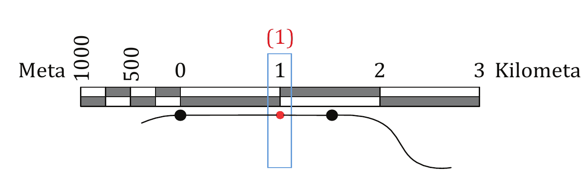
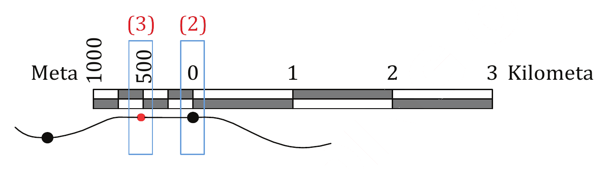
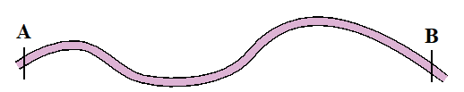

Kielelezo namba 15: Kubadilisha umbali uliopimwa katika ramani kwa kutumia uzi kuwa umbali halisi wa ardhi

(d)Kwa kutumia skeli ya uwakilishi wa sehemu (uwiano), umbali wa ardhhi kutoka kituo A hadi B unaweza kukokotolewa kama ilivyofanyika katika upimaji wa umbali wa mstari ulionyooka kwa kutumia kipande cha karatasi. Ikiwa skeli ya uwakilishi ni 1:50000 na umbali katika ramani kati ya fundo mbili ni Sm 3, umbali kati ya kituo A na B katika ardhi ni Km 1.5.
2. Kutumia bikari
Zifuatazo ni hatua za kupima umbali katika ramani kwa kutumia bikari: (a)Baini vituo viwili, yaani A na B, kama inavyowasilishwa katika Kielelezo namba 16.

Kielelezo namba 16: Umbali usionyooka kutoka kituo A hadi B unaohitajika kupimwa